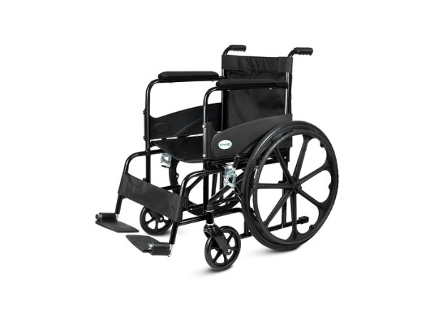
WheelchairWheelchair
Used to provide seated mobility and support for people who have difficulty walking.നടക്കാൻ ബുദ്ധിമുട്ടുള്ളവർക്ക് ഇരുന്ന് സഞ്ചരിക്കാനും പിന്തുണ നൽകാനും ഉപയോഗിക്കുന്നു.
Catalogue page 1Complete Medical Solutions
Since 1991
Used to provide seated mobility and support for people who have difficulty walking.നടക്കാൻ ബുദ്ധിമുട്ടുള്ളവർക്ക് ഇരുന്ന് സഞ്ചരിക്കാനും പിന്തുണ നൽകാനും ഉപയോഗിക്കുന്നു.
Catalogue page 1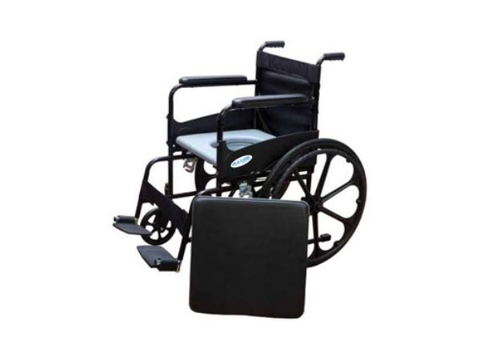
Combines wheelchair mobility with a commode function for convenient toileting and personal care.വീൽചെയർ സഞ്ചാരവും ശൗചാലയ സൗകര്യവും ഒരുമിച്ച് നൽകാൻ ഉപയോഗിക്കുന്നു.
Catalogue page 1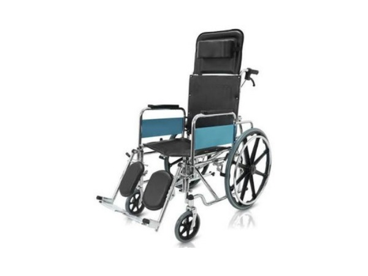
A reclining wheelchair that allows the user to adjust the backrest for added comfort and support.പിന്നിലെ ഭാഗം ക്രമീകരിച്ച് കൂടുതൽ സുഖവും പിന്തുണയും നൽകുന്ന വീൽചെയർ.
Catalogue page 1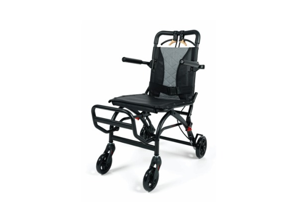
Compact wheelchair designed for assisted transport and short-distance mobility.സഹായത്തോടെ ചെറിയ ദൂരങ്ങളിൽ രോഗികളെ കൊണ്ടുപോകാൻ ഉപയോഗിക്കുന്ന കോംപാക്റ്റ് വീൽചെയർ.
Catalogue page 1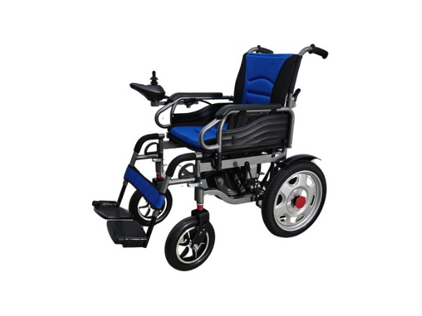
Battery-powered wheelchair designed to help users move independently with powered controls.മോട്ടോർ ഉപയോഗിച്ച് സ്വയം സഞ്ചരിക്കാൻ സഹായിക്കുന്ന ബാറ്ററി പ്രവർത്തിത വീൽചെയർ.
Catalogue page 1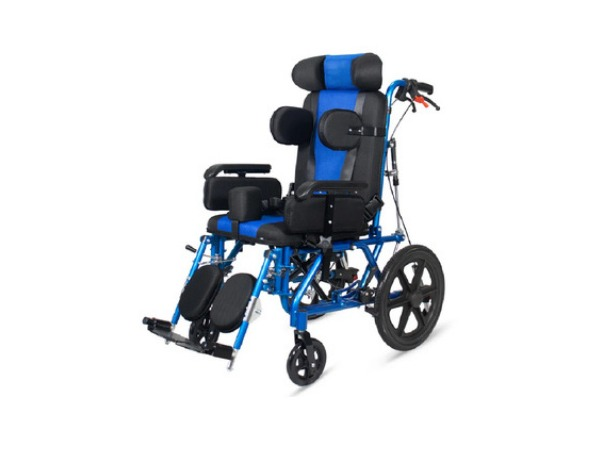
Supportive wheelchair designed for users who need additional positioning and mobility support.കൂടുതൽ ശരീര പിന്തുണയും ശരിയായ ഇരിപ്പും ആവശ്യമായവർക്ക് ഉപയോഗിക്കുന്നു.
Catalogue page 1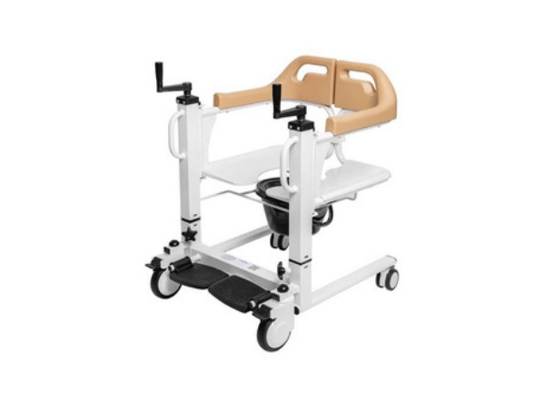
Used to assist with transferring or repositioning patients safely between different locations.രോഗിയെ സുരക്ഷിതമായി ഒരു സ്ഥലത്ത് നിന്ന് മറ്റൊരിടത്തേക്ക് മാറ്റാൻ സഹായിക്കുന്നു.
Catalogue page 1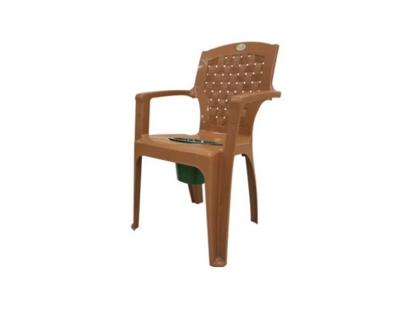
Used beside the bed or in the bathroom to provide convenient toileting support.കിടക്കയ്ക്കരികിലോ ബാത്ത്റൂമിലോ സൗകര്യപ്രദമായ ശൗച ഉപയോഗത്തിനായി ഉപയോഗിക്കുന്നു.
Catalogue page 1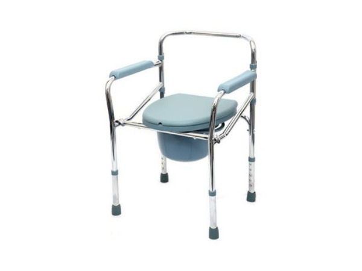
A portable toileting chair designed for users who need assistance reaching a bathroom.ബാത്ത്റൂമിലേക്ക് പോകാൻ ബുദ്ധിമുട്ടുള്ളവർക്ക് സമീപത്ത് ഉപയോഗിക്കാവുന്ന പോർട്ടബിൾ കമോഡ് ചെയർ.
Catalogue page 1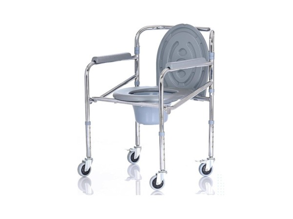
Wheeled commode chair designed to assist with toileting and patient movement.ശൗച ആവശ്യങ്ങൾക്കും രോഗിയെ മാറ്റുന്നതിനും സഹായിക്കുന്ന ചക്രങ്ങളുള്ള കമോഡ് ചെയർ.
Catalogue page 2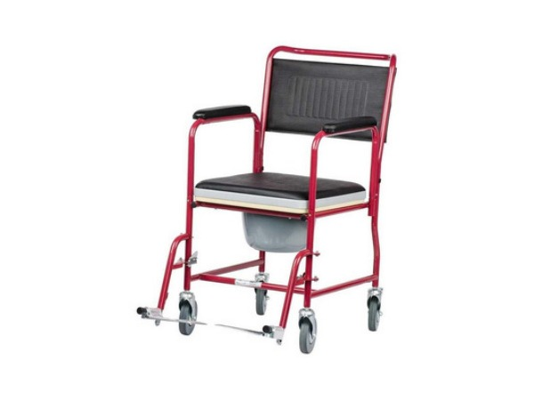
Mobility support chair designed to assist users with seated movement and daily mobility.വീൽചെയർ സഞ്ചാരവും ശൗചാലയ സൗകര്യവും ഒരുമിച്ച് നൽകാൻ ഉപയോഗിക്കുന്നു.
Catalogue page 2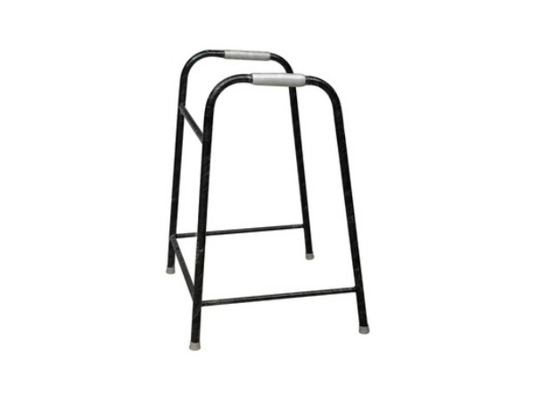
Provides stable support and balance for people who need assistance while walking.നടക്കുമ്പോൾ സ്ഥിരതയും ബാലൻസും നൽകുന്ന വാക്കർ.
Catalogue page 2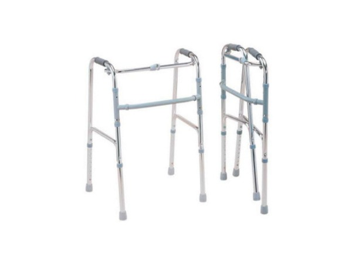
Foldable walking aid that provides stability and can be stored or transported easily.മടക്കി സൂക്ഷിക്കാനും കൊണ്ടുപോകാനും എളുപ്പമുള്ള സ്ഥിരതയുള്ള വാക്കിംഗ് എയ്ഡ്.
Catalogue page 2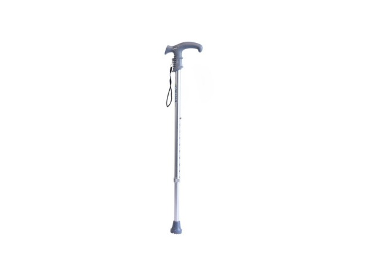
Provides extra balance and support while walking.നടക്കുമ്പോൾ അധിക ബാലൻസും പിന്തുണയും നൽകുന്നു.
Catalogue page 2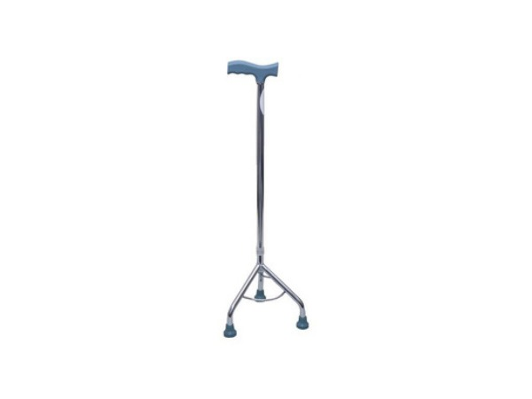
Three-legged walking aid designed to provide greater stability and balance.മൂന്ന് കാലുകളിലൂടെ കൂടുതൽ സ്ഥിരത നൽകുന്ന വാക്കിംഗ് സ്റ്റിക്ക്.
Catalogue page 2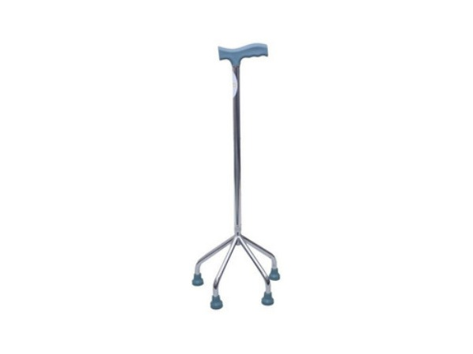
Four-point walking aid designed to provide enhanced stability during walking.നടക്കുമ്പോൾ കൂടുതൽ സ്ഥിരത നൽകുന്ന നാല് പോയിന്റുള്ള വാക്കിംഗ് എയ്ഡ്.
Catalogue page 2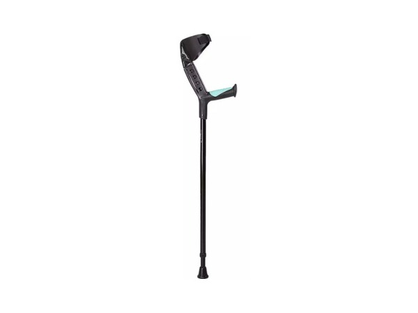
Used to support walking and reduce weight placed on the legs when mobility is limited.നടക്കുമ്പോൾ കാലുകളിൽ വരുന്ന ഭാരം കുറയ്ക്കാനും പിന്തുണ നൽകാനും ഉപയോഗിക്കുന്നു.
Catalogue page 2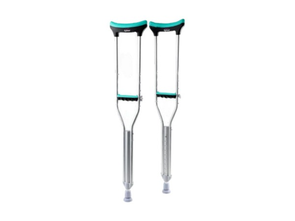
Used to support walking and help reduce weight-bearing on the legs.നടക്കാൻ സഹായിക്കുകയും കാലുകളിൽ ഭാരം കുറയ്ക്കുകയും ചെയ്യുന്നു.
Catalogue page 2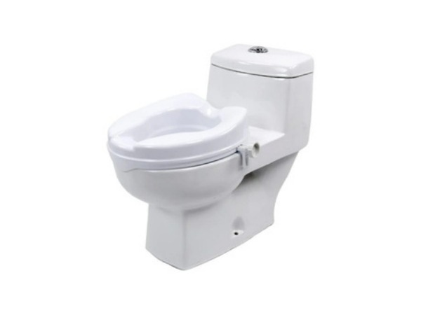
Raises the height of a toilet to make sitting down and standing up easier.ടോയ്ലറ്റിന്റെ ഉയരം കൂട്ടി ഇരിക്കാനും എഴുന്നേൽക്കാനും എളുപ്പമാക്കുന്നു.
Catalogue page 3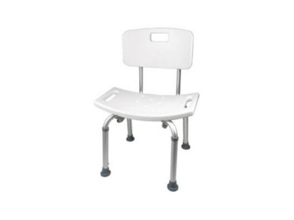
Provides a stable seated position during bathing and showering.കുളിക്കുമ്പോൾ സുരക്ഷിതമായി ഇരിക്കാൻ സഹായിക്കുന്നു.
Catalogue page 3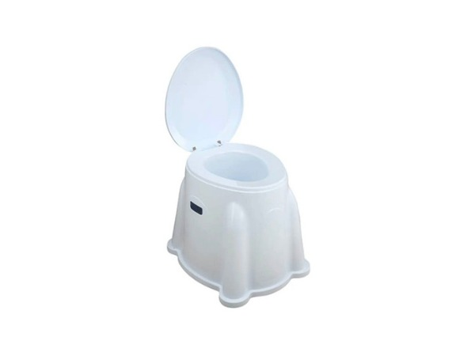
Portable toileting solution for use where a regular bathroom is not easily accessible.സാധാരണ ബാത്ത്റൂം ലഭ്യമല്ലാത്തപ്പോൾ ഉപയോഗിക്കാവുന്ന പോർട്ടബിൾ ശൗച സൗകര്യം.
Catalogue page 3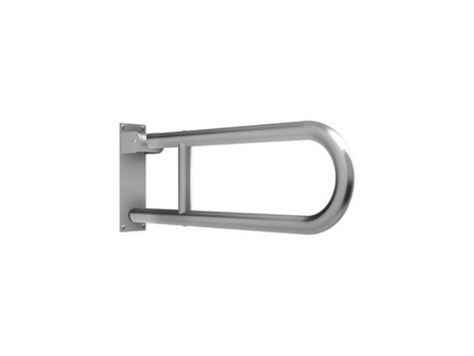
Provide a secure handhold for support near toilets, showers and other areas.ടോയ്ലറ്റ്, ഷവർ തുടങ്ങിയ സ്ഥലങ്ങളിൽ പിടിച്ച് നിൽക്കാൻ സുരക്ഷിതമായ പിന്തുണ നൽകുന്നു.
Catalogue page 3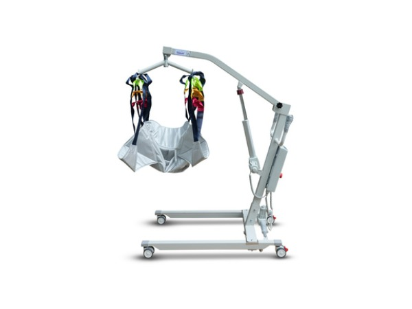
Used to assist in lifting and transferring patients who need substantial mobility support.ചലിക്കാൻ ബുദ്ധിമുട്ടുള്ള രോഗികളെ ഉയർത്താനും മാറ്റാനും സഹായിക്കുന്നു.
Catalogue page 3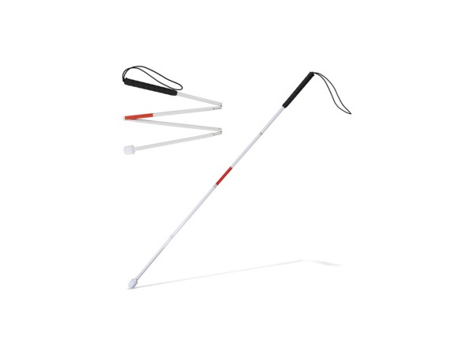
Mobility aid designed to help people with visual impairment detect obstacles while walking.കാഴ്ചക്കുറവുള്ളവർക്ക് നടക്കുമ്പോൾ മുന്നിലുള്ള തടസ്സങ്ങൾ തിരിച്ചറിയാൻ സഹായിക്കുന്ന മൊബിലിറ്റി എയ്ഡ്.
Catalogue page 3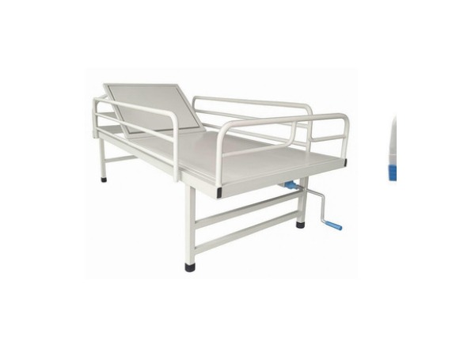
Hospital-style bed that allows the backrest to be raised for patient comfort and care.രോഗിയുടെ സൗകര്യത്തിനും പരിചരണത്തിനുമായി പിൻഭാഗം ഉയർത്താവുന്ന ആശുപത്രി കിടക്ക.
Catalogue page 4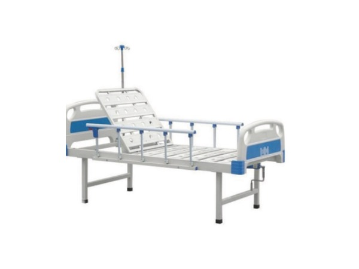
Semi-Fowler hospital bed with ABS components, designed for patient positioning and care.രോഗിയെ ശരിയായ നിലയിൽ കിടത്താനും പരിചരിക്കാനും ഉപയോഗിക്കുന്ന ABS ഘടകങ്ങളുള്ള ആശുപത്രി കിടക്ക.
Catalogue page 4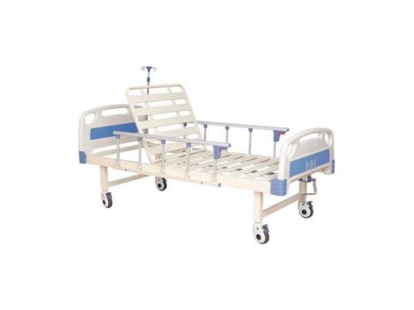
Semi-Fowler hospital bed with wheels for easier movement and patient care.ചക്രങ്ങളുള്ള Semi-Fowler ആശുപത്രി കിടക്ക; രോഗി പരിചരണത്തിനും മാറ്റുന്നതിനും സഹായിക്കുന്നു.
Catalogue page 4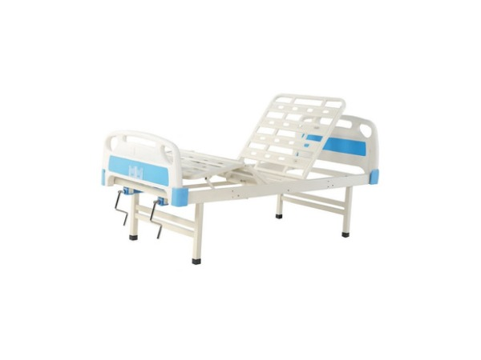
Adjustable hospital bed designed to support different patient positions during care.രോഗിയുടെ ആവശ്യാനുസരണം വിവിധ പൊസിഷനുകളിൽ ക്രമീകരിക്കാവുന്ന ആശുപത്രി കിടക്ക.
Catalogue page 4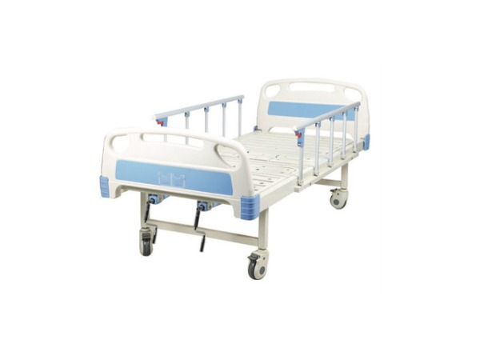
Adjustable hospital bed with wheels for easier movement and patient positioning.ചക്രങ്ങളുള്ള ക്രമീകരിക്കാവുന്ന ആശുപത്രി കിടക്ക.
Catalogue page 4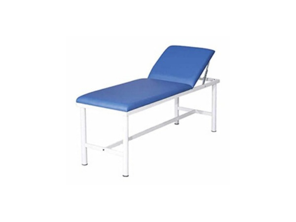
Provides a stable, comfortable surface for medical examinations and consultations.മെഡിക്കൽ പരിശോധനകൾക്കും കൺസൾട്ടേഷനുകൾക്കും സ്ഥിരതയുള്ള സൗകര്യപ്രദമായ മേശ.
Catalogue page 4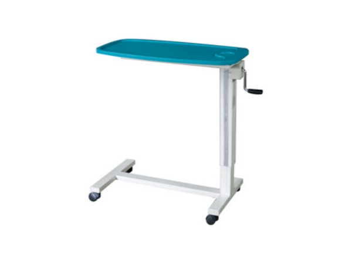
Adjustable table designed to provide a convenient surface for meals, reading or activities beside a bed.കിടക്കയ്ക്കരികിൽ ഭക്ഷണം, വായന തുടങ്ങിയ ആവശ്യങ്ങൾക്ക് ഉപയോഗിക്കാവുന്ന ക്രമീകരിക്കാവുന്ന മേശ.
Catalogue page 4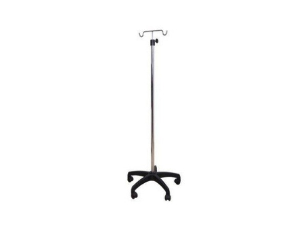
Used to hold intravenous fluid bags securely beside a patient.രോഗിയുടെ സമീപത്ത് IV ഫ്ലൂയിഡ് ബാഗുകൾ സുരക്ഷിതമായി തൂക്കാൻ ഉപയോഗിക്കുന്നു.
Catalogue page 4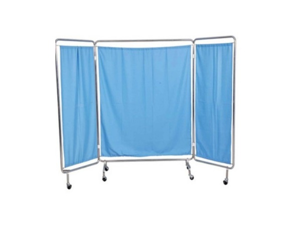
Provides privacy and separation in hospital, clinic or care environments.ആശുപത്രിയിലും ക്ലിനിക്കിലും സ്വകാര്യതയ്ക്കും ഇടം വേർതിരിക്കാനും ഉപയോഗിക്കുന്നു.
Catalogue page 4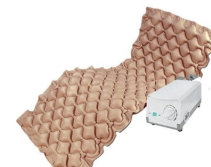
Inflatable mattress designed to provide cushioning and comfort for people resting or spending extended time in bed.കിടക്കയിൽ കൂടുതൽ കുഷനിംഗും സുഖവും നൽകാൻ ഉപയോഗിക്കുന്ന ഇൻഫ്ലേറ്റബിൾ ബെഡ്.
Catalogue page 5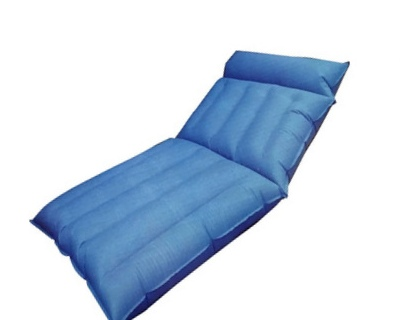
Water-filled mattress designed to provide cushioning and distribute body weight for comfortable resting.ശരീരഭാരം കൂടുതൽ സമമായി വിതരണം ചെയ്ത് സുഖകരമായ വിശ്രമത്തിന് സഹായിക്കുന്ന വാട്ടർ-ഫിൽഡ് ബെഡ്.
Catalogue page 5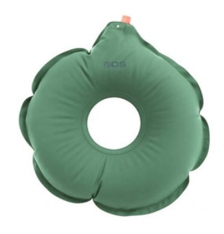
Inflatable cushion used to provide extra seating comfort and cushioning.ഇരിക്കുമ്പോൾ കൂടുതൽ കുഷനിംഗും സുഖവും നൽകുന്ന ഇൻഫ്ലേറ്റബിൾ കുഷൻ.
Catalogue page 5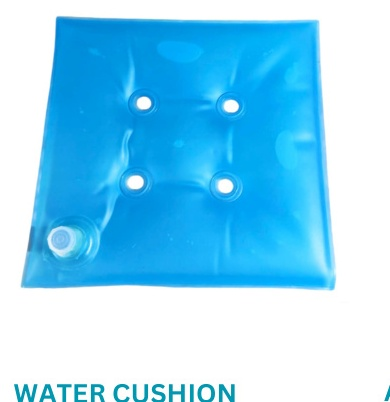
Water-filled cushion designed to provide soft cushioning and comfortable support.മൃദുവായ കുഷനിംഗും സുഖകരമായ പിന്തുണയും നൽകുന്ന വാട്ടർ കുഷൻ.
Catalogue page 5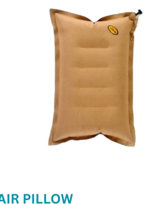
Inflatable pillow designed to provide cushioning and support while resting.വിശ്രമിക്കുമ്പോൾ കുഷനിംഗും പിന്തുണയും നൽകുന്ന ഇൻഫ്ലേറ്റബിൾ പില്ലോ.
Catalogue page 5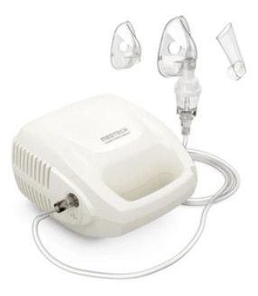
Converts liquid medicine into a fine mist for inhalation through a mask or mouthpiece, as prescribed.ഡോക്ടർ നിർദേശിക്കുന്ന ദ്രാവക മരുന്ന് ശ്വസിക്കാൻ കഴിയുന്ന മിസ്റ്റാക്കി മാറ്റുന്നു.
Catalogue page 5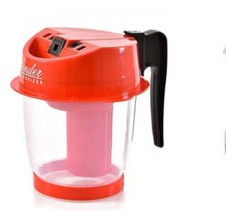
Produces warm vapour for inhalation and humidification; use according to the product instructions.ചൂടുള്ള വേപ്പർ നൽകുന്നതിനും ഈർപ്പം കൂട്ടുന്നതിനും ഉപയോഗിക്കുന്നു.
Catalogue page 5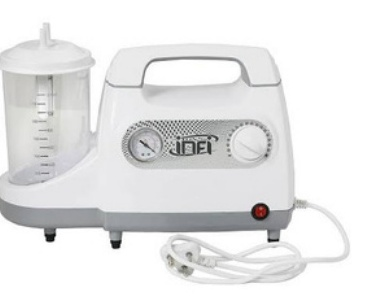
Compact suction device used to remove secretions or fluids when suction support is required.ആവശ്യമായപ്പോൾ സ്രവങ്ങളും ദ്രവങ്ങളും സക്ഷൻ ചെയ്ത് നീക്കാൻ ഉപയോഗിക്കുന്ന പോർട്ടബിൾ ഉപകരണം.
Catalogue page 5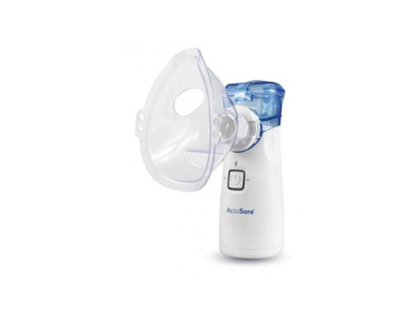
Compact mesh nebulizer used to deliver prescribed liquid medication as an inhaled mist.നിർദേശിച്ച ദ്രാവക മരുന്ന് ശ്വസിക്കാവുന്ന മിസ്റ്റാക്കി മാറ്റുന്ന കോംപാക്റ്റ് നെബുലൈസർ.
Catalogue page 6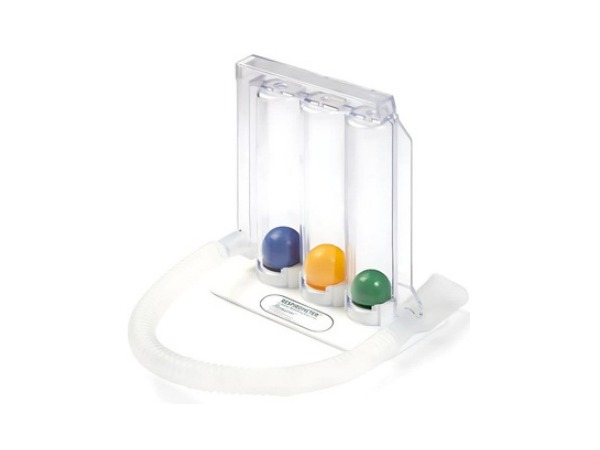
Breathing exercise device used to encourage slow, deep breaths during respiratory care.ആഴത്തിലുള്ള ശ്വാസോച്ഛ്വാസ വ്യായാമത്തിന് സഹായിക്കുന്ന റെസ്പിറേറ്ററി ഉപകരണം.
Catalogue page 6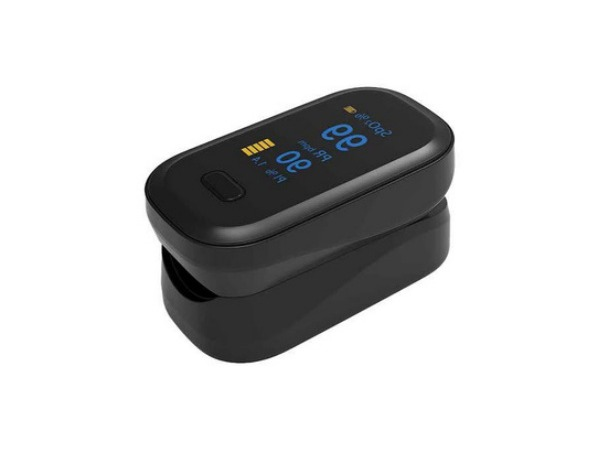
Finger device used to measure blood oxygen saturation and pulse rate.വിരലിൽ ഘടിപ്പിച്ച് രക്തത്തിലെ ഓക്സിജൻ സാച്ചുറേഷനും പൾസ് റേറ്റും അളക്കുന്നു.
Catalogue page 6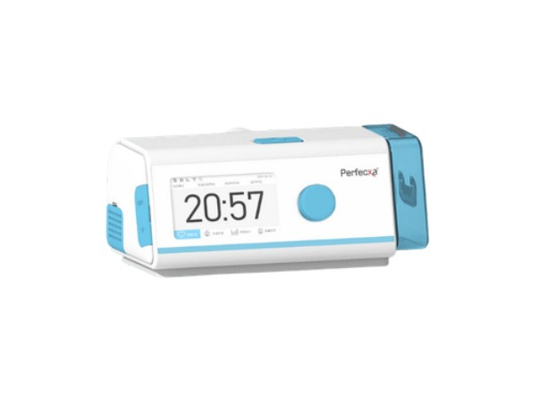
Breathing-support machines used to provide positive airway pressure during sleep or respiratory care, as prescribed.ഡോക്ടർ നിർദേശപ്രകാരം ഉറക്കത്തിലും ശ്വസന പരിചരണത്തിലും പോസിറ്റീവ് എയർവേ പ്രഷർ നൽകാൻ ഉപയോഗിക്കുന്നു.
Catalogue page 6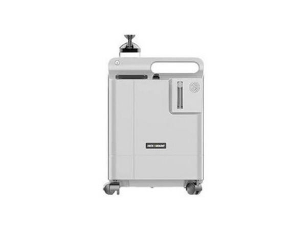
Concentrates oxygen from room air to provide supplemental oxygen when prescribed by a healthcare professional.ഡോക്ടർ നിർദേശിക്കുന്ന അധിക ഓക്സിജൻ നൽകാൻ വായുവിൽ നിന്ന് ഓക്സിജൻ സാന്ദ്രമാക്കുന്നു.
Catalogue page 6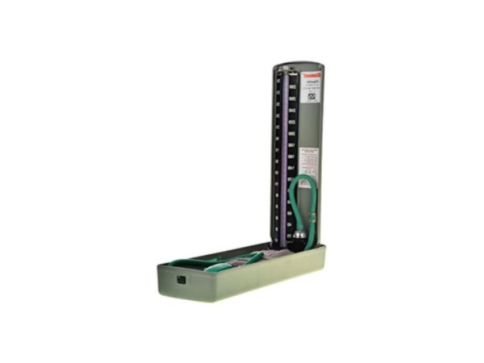
Manual blood-pressure monitor used to measure blood pressure with a cuff and manual gauge.കഫ്, മാനുവൽ ഗേജ് എന്നിവ ഉപയോഗിച്ച് രക്തസമ്മർദ്ദം അളക്കാൻ ഉപയോഗിക്കുന്നു.
Catalogue page 7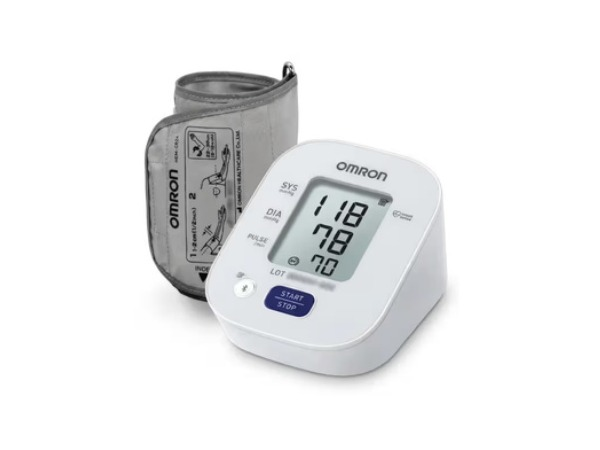
Digital monitor used to measure blood pressure electronically with a cuff.കഫ് ഉപയോഗിച്ച് രക്തസമ്മർദ്ദം ഇലക്ട്രോണിക് ആയി അളക്കുന്നു.
Catalogue page 7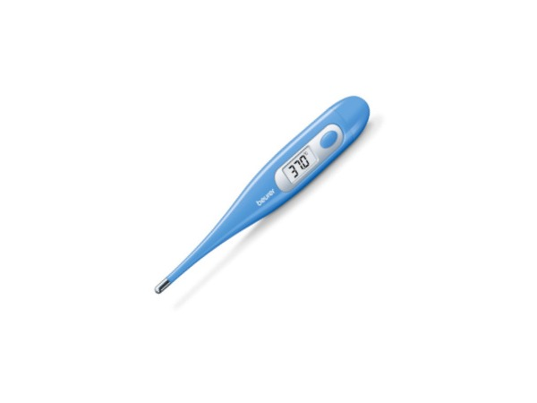
Electronic thermometer used to measure body temperature quickly.ശരീര താപനില വേഗത്തിൽ അളക്കാൻ ഉപയോഗിക്കുന്ന ഇലക്ട്രോണിക് തെർമോമീറ്റർ.
Catalogue page 7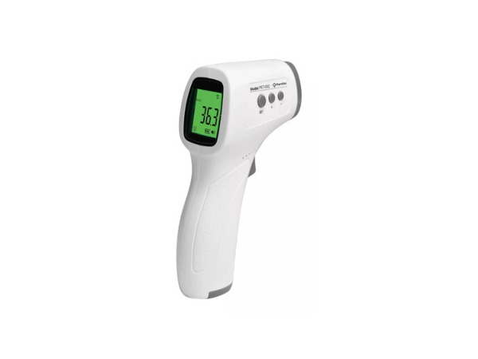
Non-contact thermometer used to measure temperature using infrared sensing.ശരീരത്തെ സ്പർശിക്കാതെ ഇൻഫ്രാറെഡ് സാങ്കേതികവിദ്യ ഉപയോഗിച്ച് താപനില അളക്കുന്നു.
Catalogue page 7Used to measure body temperature.ശരീര താപനില അളക്കാൻ ഉപയോഗിക്കുന്നു.
Catalogue page 7Portable device used to check blood glucose levels using a small blood sample.ചെറിയ രക്തസാമ്പിൾ ഉപയോഗിച്ച് രക്തത്തിലെ ഗ്ലൂക്കോസ് അളക്കാൻ ഉപയോഗിക്കുന്നു.
Catalogue page 7Personal-use device intended to provide comfort during muscle cramp or discomfort episodes.മസിൽ ക്രാമ്പ് അല്ലെങ്കിൽ അസ്വസ്ഥതയുള്ളപ്പോൾ ആശ്വാസത്തിനായി ഉപയോഗിക്കുന്ന വ്യക്തിഗത ഉപകരണം.
Catalogue page 7Handheld massager designed to provide relaxing massage to the scalp and head area.തലയോട്ടിക്കും തലക്കും സുഖകരമായ മസാജ് നൽകാൻ ഉപയോഗിക്കുന്നു.
Catalogue page 7Massage device designed to provide relaxing massage and comfort to different body areas.ശരീരത്തിന്റെ വിവിധ ഭാഗങ്ങളിൽ മസാജും ആശ്വാസവും നൽകാൻ ഉപയോഗിക്കുന്നു.
Catalogue page 7Foot-care device that uses electrical stimulation to provide massage and relaxation.ഇലക്ട്രിക്കൽ സ്റ്റിമുലേഷൻ ഉപയോഗിച്ച് കാലുകൾക്ക് മസാജും റിലാക്സേഷനും നൽകുന്നു.
Catalogue page 8Electrical stimulation device commonly used for temporary relief of certain types of pain, as advised by a professional.ചില തരത്തിലുള്ള വേദനയിൽ താൽക്കാലിക ആശ്വാസത്തിനായി ഇലക്ട്രിക്കൽ സ്റ്റിമുലേഷൻ നൽകുന്ന ഉപകരണം.
Catalogue page 8Hand-operated pump used to express and collect breast milk.മുലപ്പാൽ കൈകൊണ്ട് പമ്പ് ചെയ്ത് ശേഖരിക്കാൻ ഉപയോഗിക്കുന്നു.
Catalogue page 8Electric pump designed to express and collect breast milk with powered operation.മോട്ടോർ ഉപയോഗിച്ച് മുലപ്പാൽ പമ്പ് ചെയ്ത് ശേഖരിക്കാൻ ഉപയോഗിക്കുന്നു.
Catalogue page 8Hands-free wearable pump designed to express and collect breast milk conveniently.കൈകൾ സ്വതന്ത്രമായി വച്ച് മുലപ്പാൽ ശേഖരിക്കാൻ ഉപയോഗിക്കുന്ന വെയറബിൾ പമ്പ്.
Catalogue page 8Heat lamp used to provide localized warmth and comfort; follow the product instructions.പ്രാദേശികമായി ചൂടും ആശ്വാസവും നൽകാൻ ഉപയോഗിക്കുന്ന ഇൻഫ്രാറെഡ് ലാമ്പ്.
Catalogue page 8Massager designed to provide relaxing massage and comfort to the feet.കാലുകൾക്ക് മസാജും ആശ്വാസവും നൽകാൻ ഉപയോഗിക്കുന്നു.
Catalogue page 8Cushion-style massager designed to provide massage while seated.ഇരുന്നുകൊണ്ട് മസാജ് ലഭിക്കാൻ ഉപയോഗിക്കുന്ന കുഷൻ-ടൈപ്പ് മസാജർ.
Catalogue page 8Electric heating pad used to provide localized warmth and comfort.പ്രാദേശികമായി ചൂടും ആശ്വാസവും നൽകാൻ ഉപയോഗിക്കുന്ന ഇലക്ട്രിക് ഹീറ്റിംഗ് പാഡ്.
Catalogue page 8Designed to provide soothing massage and relaxation for the neck and shoulder area.കഴുത്തിനും തോളുകൾക്കും മസാജും ആശ്വാസവും നൽകാൻ ഉപയോഗിക്കുന്ന ഉപകരണം.
Newly addedCompact pedal exerciser used for gentle lower-limb movement and exercise.ലഘുവായ കാലുകളുടെ വ്യായാമത്തിനും ചലനത്തിനുമായി ഉപയോഗിക്കുന്ന കോംപാക്റ്റ് പെഡൽ എക്സർസൈസർ.
Catalogue page 9Hand exercise device used to strengthen or improve finger and grip movement.കൈ, വിരൽ, ഗ്രിപ്പ് എന്നിവയുടെ വ്യായാമത്തിനും ശക്തിപ്പെടുത്തലിനും ഉപയോഗിക്കുന്നു.
Catalogue page 9Designed to measure a baby's body weight for routine monitoring.കുഞ്ഞിന്റെ ശരീരഭാരം അളക്കാൻ ഉപയോഗിക്കുന്നു.
Catalogue page 9Textured mat designed for acupressure-style relaxation and massage.അക്കുപ്രഷർ രീതിയിലുള്ള റിലാക്സേഷനും മസാജിനുമായി ഉപയോഗിക്കുന്ന ടെക്സ്ചേഡ് മാറ്റ്.
Catalogue page 9Used to measure body weight for routine monitoring.ശരീരഭാരം അളക്കാൻ ഉപയോഗിക്കുന്നു.
Catalogue page 9Supportive footwear commonly used for comfortable everyday walking and foot care.ദൈനംദിന സുഖകരമായ നടത്തത്തിനും കാലുകളുടെ പരിചരണത്തിനും ഉപയോഗിക്കുന്ന സപ്പോർട്ടീവ് ഫുട്വെയർ.
Catalogue page 9Soft, comfortable socks designed to reduce pressure and support everyday diabetic foot care.സമ്മർദ്ദം കുറയ്ക്കാനും ഡയബറ്റിക് ഫുട് കെയറിന് സഹായിക്കാനുമായി രൂപകൽപ്പന ചെയ്ത സോക്കുകൾ.
Catalogue page 9Insulated storage pouches designed to help keep insulin at a suitable temperature during travel, according to product instructions.യാത്രയ്ക്കിടെ ഇൻസുലിൻ അനുയോജ്യമായ താപനിലയിൽ സൂക്ഷിക്കാൻ സഹായിക്കുന്ന ഇൻസുലേറ്റഡ് പൗച്ചുകൾ.
Catalogue page 9Absorbent disposable wear designed for adults needing protection from urinary or bowel leakage.മൂത്രമോ മലമോ ചോർന്നുപോകുന്ന സാഹചര്യങ്ങളിൽ സംരക്ഷണത്തിനായി ഉപയോഗിക്കുന്ന ആബ്സോർബന്റ് ഡിസ്പോസബിൾ ഡയപ്പർ.
Catalogue page 10Pull-up style absorbent diaper designed for convenient everyday use.എളുപ്പത്തിൽ ധരിക്കാവുന്ന പുൾ-അപ്പ് രീതിയിലുള്ള ആബ്സോർബന്റ് ഡയപ്പർ.
Catalogue page 10Absorbent protective sheets placed on beds, chairs or other surfaces to help protect against leakage.കിടക്ക, കസേര തുടങ്ങിയവ സംരക്ഷിക്കാൻ താഴെ വിരിക്കുന്ന ആബ്സോർബന്റ് പാഡ്.
Catalogue page 10Water-resistant protective sheets used to help protect mattresses and other surfaces.മാട്രസും മറ്റ് ഉപരിതലങ്ങളും ഈർപ്പത്തിൽ നിന്ന് സംരക്ഷിക്കാൻ ഉപയോഗിക്കുന്ന വാട്ടർ-റെസിസ്റ്റന്റ് ഷീറ്റ്.
Catalogue page 10Used to clean hands when soap and water are not readily available.സോപ്പും വെള്ളവും ലഭ്യമല്ലാത്തപ്പോൾ കൈകൾ ശുചിയാക്കാൻ ഉപയോഗിക്കുന്നു.
Catalogue page 10Liquid cleanser used for routine hand washing and hygiene.ദൈനംദിന കൈ ശുചിത്വത്തിനായി ഉപയോഗിക്കുന്ന ലിക്വിഡ് ക്ലീന്സർ.
Catalogue page 10Disposable gloves used to help protect hands and maintain hygiene during examinations and care.പരിശോധനകളിലും രോഗി പരിചരണത്തിലും കൈ സംരക്ഷണത്തിനും ശുചിത്വത്തിനുമായി ഉപയോഗിക്കുന്ന ഡിസ്പോസബിൾ ഗ്ലൗസ്.
Catalogue page 10Reusable gloves designed to protect hands during household cleaning and chores.വീട്ടിലെ ക്ലീനിംഗ് ജോലികളിൽ കൈകൾ സംരക്ഷിക്കാൻ ഉപയോഗിക്കുന്ന റീയൂസബിൾ ഗ്ലൗസ്.
Catalogue page 10Soft gloves used for light hand protection, care routines or comfort as appropriate.ലഘുവായ കൈ സംരക്ഷണത്തിനും പരിചരണത്തിനുമായി ഉപയോഗിക്കുന്ന മൃദുവായ ഗ്ലൗസ്.
Catalogue page 10Thin absorbent liners used for everyday freshness and light menstrual or discharge protection.ദൈനംദിന ഫ്രഷ്നസിനും ലഘുവായ സ്രവ/മാസിക സംരക്ഷണത്തിനുമായി ഉപയോഗിക്കുന്ന ആബ്സോർബന്റ് ലൈണർ.
Catalogue page 11High-absorbency pads designed for postpartum and maternity-related bleeding.പ്രസവാനന്തര കാലത്തെ അധിക രക്തസ്രാവം കൈകാര്യം ചെയ്യാൻ ഉപയോഗിക്കുന്ന ഹൈ-ആബ്സോർബൻസി പാഡ്.
Catalogue page 11Reusable menstrual-care products designed to collect menstrual flow.മാസിക രക്തസ്രാവം ശേഖരിക്കാൻ ഉപയോഗിക്കുന്ന റീയൂസബിൾ മെൻസ്ട്രുവൽ കെയർ ഉൽപ്പന്നം.
Catalogue page 11Absorbent pads used to manage menstrual flow.മാസിക രക്തസ്രാവം കൈകാര്യം ചെയ്യാൻ ഉപയോഗിക്കുന്ന ആബ്സോർബന്റ് പാഡ്.
Catalogue page 11Absorbent pads placed inside a bra to help manage breast-milk leakage.മുലപ്പാൽ ചോർച്ച ആഗിരണം ചെയ്യാൻ ബ്രായ്ക്കുള്ളിൽ ഉപയോഗിക്കുന്ന പാഡ്.
Catalogue page 11Personal cleansing wash designed for routine intimate hygiene.ഇന്റിമേറ്റ് വ്യക്തിഗത ശുചിത്വത്തിനായി ഉപയോഗിക്കുന്ന ക്ലീന്സിംഗ് വാഷ്.
Catalogue page 11Portable urination aid designed to help users urinate while standing when using a toilet is difficult.ടോയ്ലറ്റ് ഉപയോഗിക്കാൻ ബുദ്ധിമുട്ടുള്ളപ്പോൾ നിൽക്കുന്ന നിലയിൽ മൂത്രമൊഴിക്കാൻ സഹായിക്കുന്ന പോർട്ടബിൾ എയ്ഡ്.
Catalogue page 11Reusable absorbent underwear designed to provide menstrual-flow protection.മാസിക രക്തസ്രാവ സംരക്ഷണത്തിനായി ഉപയോഗിക്കുന്ന റീയൂസബിൾ ആബ്സോർബന്റ് ഇൻറിമേറ്റ് വെയർ.
Catalogue page 11Absorbent disposable diapers designed to keep babies dry and comfortable.കുഞ്ഞിനെ വരണ്ടതും സുഖകരവുമായി നിലനിർത്താൻ ഉപയോഗിക്കുന്ന ആബ്സോർബന്റ് ഡിസ്പോസബിൾ ഡയപ്പർ.
Catalogue page 12Soft wipes used for convenient cleaning during diaper changes and everyday baby care.ഡയപ്പർ മാറ്റുമ്പോഴും ദൈനംദിന ബേബി കെയറിലും ശുചിയാക്കാൻ ഉപയോഗിക്കുന്ന സോഫ്റ്റ് വൈപ്പുകൾ.
Catalogue page 12Water-resistant baby mats designed to provide a clean, comfortable surface for play or care.കുഞ്ഞിന്റെ കളിക്കും പരിചരണത്തിനുമായി വൃത്തിയുള്ളതും സൗകര്യപ്രദവുമായ ഉപരിതലം നൽകുന്ന വാട്ടർ-റെസിസ്റ്റന്റ് മാറ്റ്.
Catalogue page 12Gentle cleansing product intended for washing a baby's hair.കുഞ്ഞിന്റെ മുടി സാവധാനത്തിൽ വൃത്തിയാക്കാൻ ഉപയോഗിക്കുന്ന ഷാംപൂ.
Catalogue page 12Gentle cleansing soap intended for routine baby skin care.കുഞ്ഞിന്റെ ദൈനംദിന ത്വക്ക് പരിചരണത്തിനായി ഉപയോഗിക്കുന്ന മൃദുവായ സോപ്പ്.
Catalogue page 12Moisturizing lotion designed for everyday baby skin care.കുഞ്ഞിന്റെ ത്വക്കിന് ഈർപ്പം നൽകാൻ ഉപയോഗിക്കുന്ന മോയ്സ്ചറൈസിംഗ് ലോഷൻ.
Catalogue page 12Small grooming tool used to trim nails safely.നഖങ്ങൾ സുരക്ഷിതമായി മുറിക്കാൻ ഉപയോഗിക്കുന്ന ചെറിയ ഗ്രൂമിംഗ് ഉപകരണം.
Catalogue page 12Bottles designed for feeding babies with milk or other suitable liquids.കുഞ്ഞിന് പാൽ അല്ലെങ്കിൽ അനുയോജ്യമായ ദ്രാവകം നൽകാൻ ഉപയോഗിക്കുന്ന ഫീഡിംഗ് ബോട്ടിൽ.
Catalogue page 12Small, soft-bristled brushes designed for cleaning a baby's or child's teeth and gums.കുഞ്ഞിന്റെയും കുട്ടികളുടെയും പല്ലുകളും മോണകളും വൃത്തിയാക്കാൻ ഉപയോഗിക്കുന്ന മൃദുവായ ബ്രഷ്.
Catalogue page 12Finger-worn brushes designed for gentle cleaning of a baby's gums and early teeth.കുഞ്ഞിന്റെ മോണയും ആദ്യ പല്ലുകളും സാവധാനത്തിൽ വൃത്തിയാക്കാൻ വിരലിൽ ധരിച്ച് ഉപയോഗിക്കുന്ന ബ്രഷ്.
Catalogue page 13Toothpaste formulated for children's routine oral hygiene; use as directed.കുട്ടികളുടെ ദൈനംദിന വായ് ശുചിത്വത്തിനായി ഉപയോഗിക്കുന്ന ടൂത്ത്പേസ്റ്റ്.
Catalogue page 13Chewable baby-care product designed to soothe gums during teething.പല്ലുവരുന്ന സമയത്ത് കുഞ്ഞിന്റെ മോണയ്ക്ക് ആശ്വാസം നൽകാൻ ചവയ്ക്കുന്ന ഉപകരണം.
Catalogue page 13Soothing accessory designed for babies who use a pacifier.കുഞ്ഞിനെ ശാന്തമാക്കാൻ ഉപയോഗിക്കുന്ന പസിഫയർ.
Catalogue page 13Small cotton-tipped buds used for suitable personal-care and cleaning purposes; avoid inserting into the ear canal.വ്യക്തിഗത പരിചരണത്തിനും അനുയോജ്യമായ ശുചീകരണ ആവശ്യങ്ങൾക്കും ഉപയോഗിക്കുന്ന കോട്ടൺ-ടിപ്പ്ഡ് ബഡ്സ്.
Catalogue page 13Baby-care device used to gently remove nasal mucus and help clear a baby's nose.കുഞ്ഞിന്റെ മൂക്കിലെ സ്രവങ്ങൾ സാവധാനത്തിൽ നീക്കി മൂക്ക് വൃത്തിയാക്കാൻ സഹായിക്കുന്നു.
Catalogue page 13Finger device used to measure blood oxygen saturation and pulse rate.വിരലിൽ ഘടിപ്പിച്ച് രക്തത്തിലെ ഓക്സിജൻ സാച്ചുറേഷനും പൾസ് റേറ്റും അളക്കുന്നു.
Catalogue page 13Small comb designed for gently grooming a baby's hair.കുഞ്ഞിന്റെ മുടി സാവധാനത്തിൽ ചീകാൻ ഉപയോഗിക്കുന്ന ചെറിയ കോംബ്.
Catalogue page 13Baby clothing accessory set designed to help keep a baby's head comfortably covered.കുഞ്ഞിന്റെ തല സുഖകരമായി മൂടിവയ്ക്കാൻ ഉപയോഗിക്കുന്ന ബേബി ക്യാപ് സെറ്റ്.
Catalogue page 13Water-resistant sheet used to protect bedding or other surfaces from moisture.കിടക്കയും മറ്റ് ഉപരിതലങ്ങളും ഈർപ്പത്തിൽ നിന്ന് സംരക്ഷിക്കാൻ ഉപയോഗിക്കുന്ന വാട്ടർ-റെസിസ്റ്റന്റ് ഷീറ്റ്.
Catalogue page 14Reusable cloth diapers designed for everyday baby diapering.ദൈനംദിന ബേബി ഡയപ്പറിംഗിനായി വീണ്ടും ഉപയോഗിക്കാവുന്ന തുണി ഡയപ്പർ.
Catalogue page 14Supportive pillow designed to cushion the neck during travel or resting.യാത്രയ്ക്കോ വിശ്രമത്തിനോ കഴുത്തിന് പിന്തുണ നൽകുന്ന പില്ലോ.
Catalogue page 14Soft blankets designed to provide warmth and comfort for babies.കുഞ്ഞിന് ചൂടും സുഖവും നൽകാൻ ഉപയോഗിക്കുന്ന മൃദുവായ ബ്ലാങ്കറ്റ്.
Catalogue page 14Protective bed net designed to help keep insects away from a sleeping baby or user.ഉറങ്ങുന്ന കുഞ്ഞിനെയോ വ്യക്തിയെയോ കൊതുക് പോലുള്ള കീടങ്ങളിൽ നിന്ന് സംരക്ഷിക്കാൻ ഉപയോഗിക്കുന്ന ബെഡ് നെറ്റ്.
Catalogue page 14Lightweight basket designed for carrying or organizing baby-care items.ബേബി കെയർ സാധനങ്ങൾ വയ്ക്കാനും കൊണ്ടുപോകാനും ഉപയോഗിക്കുന്ന ലഘുവായ ബാസ്കറ്റ്.
Catalogue page 14Tynor product information, images and specifications are presented from the uploaded manufacturer catalogue.